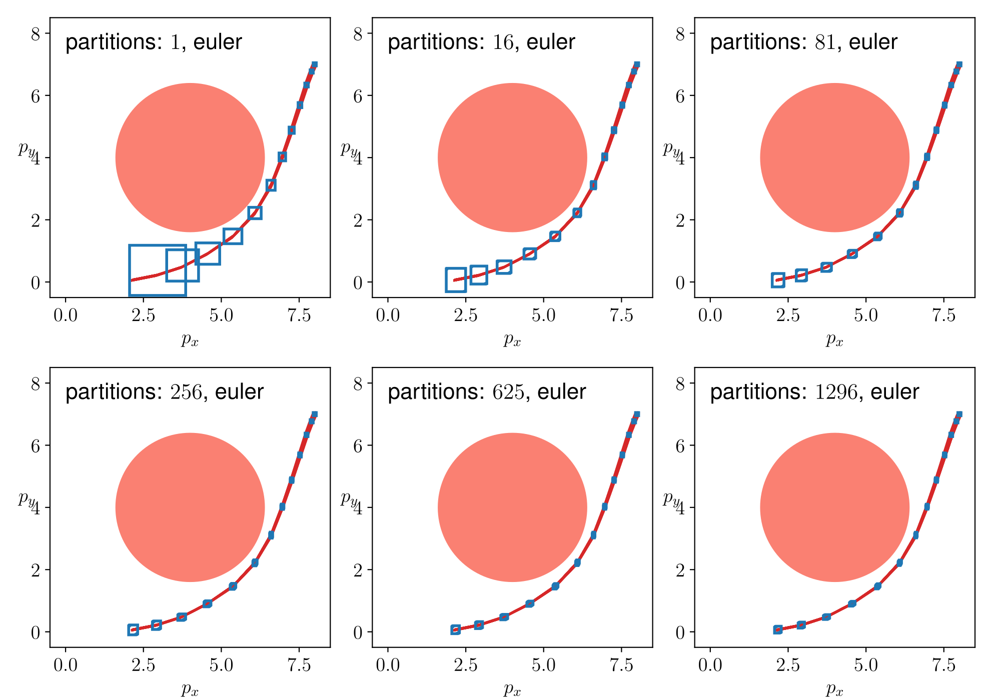
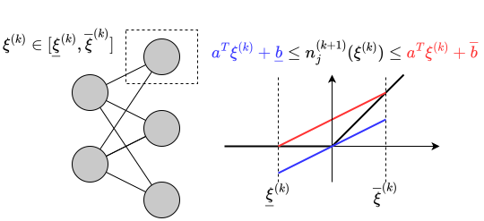
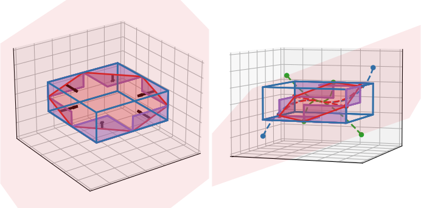
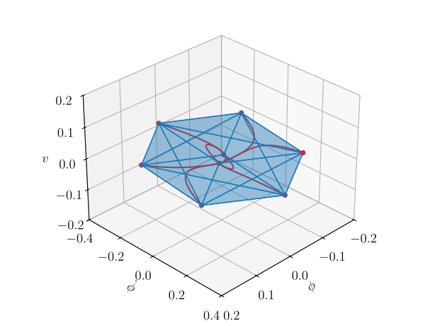
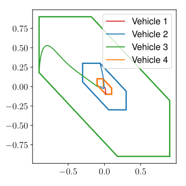
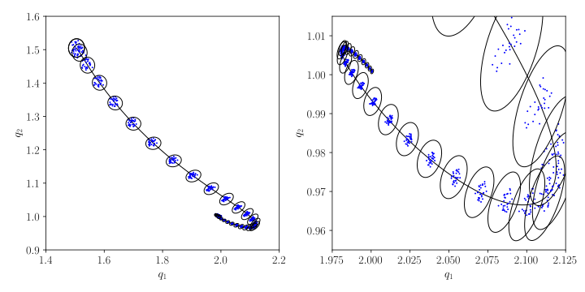
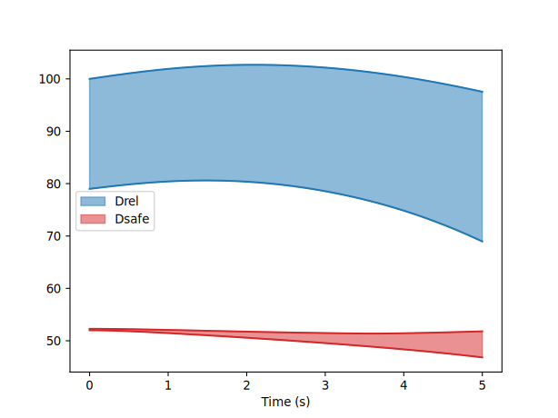
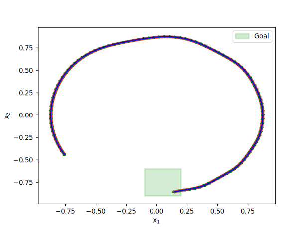
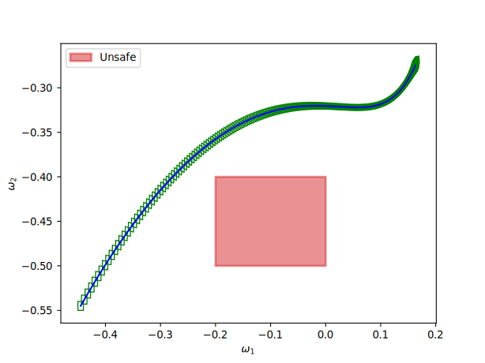
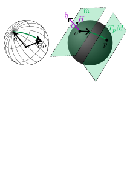

Neural Network Control System Robustness and Training Using Immrax in JAX
Workshop on Formal Verification of Control Systems with Neural Network Components @ ACC 2025
School of Electrical and Computer Engineering, Georgia Institute of Technology
July 7, 2025
Motivation: Neural Network Control System Robustness
- Eficient and scalable certification of neural network controlled systems
- Trainable conditions: backpropogate information to improve robustness
Reachable Sets
Given uncertainties in initial state \(x_0\in\mathcal{X}_0\) and disturbances \(w\in\mathcal{W}\), computes an overapproximation of the set of reachable states.
Invariant Sets
Check whether an initial set \(\mathcal{X}_0\) is robustly forward invariant under disturbances \(w\in\mathcal{W}\).
Our Solution: Interval Analysis Engine in JAX for Python
Why interval analysis?
- Very fast
- General nonlinear functions/systems through composition
- Scalable with respect to number of inputs/states
Why JAX? [1]
- Code compilation for efficient runtime execution
- GPU processing/parallelization
- rapid, batched verification online or in-the-loop
- Automatic differentiability
- [output] is differentiable with respect to [input]
- integrate into training procedures
Interval Analysis in JAX
Interval Analysis
Definition (Order, Intervals)
Element-wise Order: \(x,y\in\mathbb{R}^n\), \[ x \leq y \iff \ \forall i,\, x_i \leq y_i \] Interval: \(\mathbb{IR}^n \ni [\underline{x},\overline{x}] = \{x : \underline{x}\leq x \leq \overline{x}\}\subset \mathbb{R}^n\)
Definition (Inclusion Function [3])
Given \(f:\mathbb{R}^n\to\mathbb{R}^m\), \(\mathsf{F}=[\underline{\mathsf{F}},\overline{\mathsf{F}}]:\mathbb{IR}^n\to\mathbb{IR}^m\) is an inclusion function if for every \(x\in[\underline{x},\overline{x}]\in\mathbb{IR}^n\), \[ f(x) \in [\underline{\mathsf{F}}(\underline{x},\overline{x}),\overline{\mathsf{F}}(\underline{x},\overline{x})]. \]
- Automatable through composition: \(\mathsf{F}= \mathsf{F}_1 \circ \mathsf{F}_2\) is an inclusion function for \(f = f_1\circ f_2\)

Basics of JAX [1]: A Numerical Computation Library for Python
jit(f): Just-in-time Compilation
Compiles f upon its first execution
vmap(f): Vectorizing/Parallelizing
Vectorizes f along specified axis of input array
{jvp,vjp,jacfwd,grad}(f): Automatic Differentiation
Forward- or Reverse-mode autodiff using JVP/VJP
- Key Feature: These transformations are arbitrarily composable.
immrax.natif: A JAX Transformation for Interval Analysis
natifis fully compatible/composable with all other JAX transformations
Interval Class
lower and upper attribute for lower and upper bound of interval.
natif(f): Natural Inclusion Function
Traces f into a JAX program, and interprets primitives using their minimal inclusion functions.
Example \(f(x) = \sin(x^2)\)
{ lambda ; a:f32[5]. let
b:f32[5] = integer_pow[y=2] a
c:f32[5] = sin b
in (c,) }{ lambda ; a:f32[5] . let
b:f32[5] = integer_pow[y=2] a
c:f32[5] = sin b
in (c,) }{ lambda ; a:f32[5]. let
b:f32[5] = integer_pow[y=2] a
c:f32[5] = sin b
in (c,) }Example: Jacobian-based Inclusion Function
Definition (Jacobian-Based Inclusion Function)
Let \(f:\mathbb{R}^n\to\mathbb{R}^m\) be differentiable, with inclusion function \(\mathsf{J}\) for its Jacobian as \(\frac{\partial f}{\partial x}(x) \in [\mathsf{J}(\underline{x},\overline{x})]\) for every \(x\in[\underline{x},\overline{x}].\) Let \({\mathring{x}}\in[\underline{x},\overline{x}]\).
\[ \begin{align*} \mathsf{F}(\underline{x},\overline{x}) = [\mathsf{J}(\underline{x},\overline{x})]([\underline{x},\overline{x}] - {\mathring{x}}) + f({\mathring{x}}) \end{align*} \]
is a Jacobian-based inclusion function of \(f\).

How we’re using immrax
Embedding System and Interval Reachability
Original System
\[ \dot{x} = f(x,u), \quad x(0) = x_0 \] \(x\in\mathbb{R}^n\), \(u\in\mathbb{R}^m\).
\[ \Big\Downarrow \text{ inclusion function } \mathsf{F}(\underline{x},\overline{x},\underline{u},\overline{u}) \text{ of } f(x,u) \]
Embedding System
\[ \begin{aligned} \underline{x}_i &= \underline{\mathsf{F}}_i(\underline{x},\overline{x}_{i:\underline{x}},\underline{u},\overline{u}) = \underline{\mathsf{E}}_i(\underline{x},\overline{x},\underline{u},\overline{u}) \\ \overline{x}_i &= \overline{\mathsf{F}}_i(\underline{x}_{i:\overline{x}},\overline{x},\underline{u},\overline{u}) = \overline{\mathsf{E}}_i(\underline{x},\overline{x},\underline{u},\overline{u}) \\ \end{aligned} \] \(\left[\begin{smallmatrix} \underline{x} \\ \overline{x} \end{smallmatrix}\right]\in\mathbb{R}^{2n}\), \(\left[\begin{smallmatrix} \underline{u} \\ \overline{u} \end{smallmatrix}\right]\in\mathbb{R}^{2m}\).
Proposition (Interval Reachability) [4]
For any \(x_0\in[\underline{x}_0,\overline{x}_0]\in\mathbb{IR}^n\), \(u(t)\in[\underline{u}(t),\overline{u}(t)]\), \[ x(t) \in [\underline{x}(t), \overline{x}(t)], \] where \(t\mapsto x(t)\) is trajectory of original system, \(t\mapsto\left[\begin{smallmatrix} \underline{x}(t) \\ \overline{x}(t) \end{smallmatrix}\right]\) is trajectory of embedding system.
Embedding System Visualization
Embedding System
\[ \begin{aligned} \underline{x}_i &= \underline{\mathsf{F}}_i(\underline{x},\overline{x}_{i:\underline{x}},\underline{u},\overline{u}) = \underline{\mathsf{E}}_i(\underline{x},\overline{x},\underline{u},\overline{u}) \\ \overline{x}_i &= \overline{\mathsf{F}}_i(\underline{x}_{i:\overline{x}},\overline{x},\underline{u},\overline{u}) = \overline{\mathsf{E}}_i(\underline{x},\overline{x},\underline{u},\overline{u}) \\ \end{aligned} \] \(\left[\begin{smallmatrix} \underline{x} \\ \overline{x} \end{smallmatrix}\right]\in\mathbb{R}^{2n}\), \(\left[\begin{smallmatrix} \underline{u} \\ \overline{u} \end{smallmatrix}\right]\in\mathbb{R}^{2m}\).
Proposition (Interval Reachability) [4]
\(\forall x_0\in[\underline{x}_0,\overline{x}_0]\in\mathbb{IR}^n\), \(u(t)\in[\underline{u}(t),\overline{u}(t)]\) \[ x(t) \in [\underline{x}(t), \overline{x}(t)]. \]
GPU Scalable Verification
- Controlled by \(4\times 100\times 100\times 2\) ReLU network imitating MPC
- Inclusion function from [4], ReachMM 
| # Part. | ReachMM | immrax CPU |
immrax GPU |
|---|---|---|---|
| \(1^4 = 1\) | \(.0476\) | \(.0112\) | \(.0178\) |
| \(2^4 = 16\) | \(.690\) | \(.143\) | \(.0207\) |
| \(3^4 = 81\) | \(3.44\) | \(.627\) | \(.0306\) |
| \(4^4 = 256\) | \(11.0\) | \(1.44\) | \(.0489\) |
| \(5^4 = 625\) | \(27.1\) | \(4.60\) | \(.095\) |
| \(6^4 = 1296\) | \(55.8\) | \(11.1\) | \(.198\) |
\[ % \begin{xalignat*}{2} \label{eq:vehicle} % \dot{p}_x &= v \cos(\phi + \beta(u_2)), & \dot{\phi} &=v\sin(\beta(u_2)),\\ % \dot{p}_y &= v \sin(\phi + \beta(u_2)), & \dot{v} &= u_1. % \end{xalignat*} \begin{align*} \dot{p}_x &= v \cos(\phi + \beta(u_2)), \\ \dot{p}_y &= v \sin(\phi + \beta(u_2)), \\ \dot{\phi} &=v\sin(\beta(u_2)), \\ \dot{v} &= u_1, \\ \beta(u_1) &= \arctan \left(\tfrac{1}{2}\tan(u_2)\right). \end{align*} \]
Training Robust Neural Networks: Polytope Forward Invariance
Problem: Polytope Invariance Training
Train a neural network \(\pi\) so that a prescribed polytope \(\{x : \underline{y}\leq Hx \leq \overline{y}\}\) is robustly forward invariant.
- Existing methods use sampling-based procedures to certify Lyapunov functions post-training [5]
The pointwise embedding system check \[ \underline{\mathsf{E}}(\underline{x},\overline{x},\underline{w},\overline{w}) \geq 0 \quad \text{and} \quad \overline{\mathsf{E}}(\underline{x},\overline{x},\underline{w},\overline{w}) \leq 0 \] implies \([\underline{x},\overline{x}]\) is a \([\underline{w},\overline{w}]\)-robustly forward invariant set.
Training Robust Neural Networks: Some Details
Efficient first-order closed-loop inclusion function [4]:
- CROWN [6]—will see talk from Dr. Huan Zhang later
- Jacobian-based inclusion function—will see talk from Dr. Saber Jafarpour later

Trainable Invariance Criterion
Lift: \(y = Hx\), \(\dot{y} = Hf^\pi(H^+y,w)\) \[ \begin{aligned} \underline{\mathsf{E}}(\underline{y},\overline{y},\underline{w},\overline{w}) &\geq 0 \\ \overline{\mathsf{E}}(\underline{y},\overline{y},\underline{w},\overline{w}) &\leq 0 \end{aligned} \] \(\implies\{x : \underline{y}\leq Hx \leq \overline{y}\}\) is forward invariant

Training Robust Neural Networks: Polytope Forward Invariance (results)
Trainable Loss \[ \mathcal{L}= \sum_{i=1}^m (\operatorname{ReLU}(\overline{\mathsf{E}}_i + \varepsilon) + \operatorname{ReLU} (-\underline{\mathsf{E}}_i + \varepsilon)) \]
induces
Simple Invariance Condition \[ \begin{aligned} \underline{\mathsf{E}}(\underline{y},\overline{y},\underline{w},\overline{w}) &\geq 0 \\ \overline{\mathsf{E}}(\underline{y},\overline{y},\underline{w},\overline{w}) &\leq 0 \end{aligned} \]
Nonlinear Segway Model [7]
\[ \begin{aligned} \begin{bmatrix} \dot{\phi} \\ \dot{v} \\ \ddot{\phi} \end{bmatrix} = \begin{bmatrix} \dot{\phi} \\ \frac{\cos\phi(-1.8u + 11.5v+9.8\sin\phi)-10.9u+68.4v-1.2\dot{\phi}^2\sin\phi}{\cos\phi-24.7} \\ \frac{(9.3u-58.8v)\cos\phi + 38.6u - 234.5v - \sin\phi(208.3+\dot{\phi}^2\cos\phi)}{\cos^2\phi - 24.7} \end{bmatrix} \end{aligned} \]

- Trained in \(11.4\) seconds
- Robust to \(\pm2\%\) uncertainty on all parameters
Nonlinear Vehicle Platoon
\[ \dot{p}_j = v_j, \quad \dot{v}_j = \sigma(u_j)(1 + w_j), \] \(\sigma(u)\) (softmax), \(w_j\in[-0.1,0.1]\). \[ u_j = \begin{cases} \pi((x_j,\ x_{j-3} - x_{j},\ x_{j} - x_{j+3})), & j=3k \\ \pi((0,\ x_{j-1} - x_j,\ x_j - x_{j+1})), & \text{ow}, \end{cases} \]

- Shared policy, limited information
| N | #States | Training Time (s) |
|---|---|---|
| 4 | 8 | 6.90 |
| 10 | 20 | 57.7 |
| 16 | 32 | 170. |
| 22 | 44 | 408. |
| 28 | 56 | 1040 |
Beyond Intervals and Fixed Halfspaces


ARCH-COMP AINNCS Benchmarks: Efficiency and Accuracy
| Benchmark | Instance | CORA | CROWN-Reach | JuliaReach | NNV | immrax |
|---|---|---|---|---|---|---|
| ACC | safe-distance | 3.091 | 2.525 | 0.638 | 26.751 | 0.066 |
| AttitudeControl | avoid | 3.418 | 3.485 | 5.728 | – | 0.507 |
| NAV | robust | 1.990 | 20.902 | 5.197 | 405.291 | 42.384 |
| TORA | reach-tanh | 3.166 | 7.486 | 0.357 | 63.523 | 0.020 |
| TORA | reach-sigmoid | 6.001 | 5.293 | 0.458 | 118.312 | 0.023 |



Disclaimer: Only reporting benchmarks we could complete for now, slightly different problem setup
Conclusion
- Interval analysis is an efficient, scalable, and general robustness analysis tool
immraxis an interval analysis engine using JAX for Python, supporting JIT compilation, automatic differentiation, and GPU parallelization.- [output] is differentiable with respect to [input]—allows for training robust neural network controllers
Thank you for your attention!
https://github.com/gtfactlab/immrax
Will be on PyPi soon
ThB06.3: “A Global Coordinate-Free Approach to Invariant Contraction on Homogeneous Manifolds” 
References
Backup Slides
Training Robust Neural Networks: Polytope Forward Invariance (part 2, polytopes)
Lifted System: Let \(H\in\mathbb{R}^{m\times n}\), \(m>n\), and \(H^+H = \mathbf{I}_n\). Define \[ \dot{y} = Hf(H^+y,w), \] original system evolves on subspace \(\mathcal{H}= \{Hx\}\).
Refinement Operator [9]: \(\mathcal{I}_\mathcal{H}:\mathbb{IR}^m\to\mathbb{IR}^m\), \(\mathcal{H}\cap [\underline{y},\overline{x}] \subseteq \mathcal{I}_\mathcal{H}(\underline{x},\overline{x}) \subseteq [\underline{x},\overline{x}]\)
Parameterize left inverses: \(H^+ = H^\dagger + \eta N^T\), where \(N\) is a basis of \(\operatorname{Null}(H^T)\).
Loss function: promotes forward invariance condition \[ \begin{aligned} \mathcal{L}(\pi,\eta) = \operatorname{ReLU} (&\overline{\mathsf{E}}(\underline{y},\overline{y},\underline{w},\overline{w}) + \varepsilon) \\ &+ \operatorname{ReLU} (-\underline{\mathsf{E}}(\underline{y},\overline{y},\underline{w},\overline{w}) + \varepsilon) \end{aligned} \] \[ \underline{\mathsf{E}}(\underline{y},\overline{y},\underline{w},\overline{w}) \geq 0 \quad \text{and} \quad \overline{\mathsf{E}}(\underline{y},\overline{y},\underline{w},\overline{w}) \leq 0, \] \(\implies\{x : \underline{y}\leq Hx \leq \overline{y}\}\) is \([\underline{w},\overline{w}]\)-robustly forward invariant.
- Train \((\pi,\eta)\) via backpropogation using autodiff in JAX
From Intervals to Parametopes: Constraint-Based Set Representations
New theory [8] generalizes constraint-based set representations using the parametope. Defined by center \({\mathring{x}}\), parameters \(\alpha\), offset \(y\): \[ [\![{\mathring{x}},\alpha,y]\!]_g = \{x : g(\alpha, x - {\mathring{x}}) \leq y\} \]
Parametric Embedding System: \[ \begin{aligned} \dot{{\mathring{x}}} &= f({\mathring{x}},{\mathring{w}}) \\ \dot{\alpha} &= U(t) \\ \dot{y}_k &\geq \sup_{\substack{x\in\partial[\![{\mathring{x}},\alpha,y]\!]_g^k \\ w\in\mathcal{W}}} \left[\frac{\partial g_k}{\partial\alpha} [U(t)] + \frac{\partial g_k}{\partial x} [f(x,w) - f({\mathring{x}},{\mathring{w}})]\right] \end{aligned} \]
Theorem
For any choice of input \(t\mapsto U(t)\), \(x(t) \in [\![{\mathring{x}}(t),\alpha(t),y(t)]\!]_g\).
Polytopes: \(g_k(\alpha,x - {\mathring{x}}) = \alpha_k^T (x - {\mathring{x}})\)
Ellipsoids: \(g(\alpha,x - {\mathring{x}}) = \|\alpha(x - {\mathring{x}})\|_2^2\)